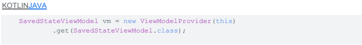
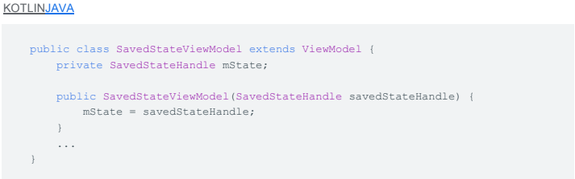

Estado
29 de Octubre del 2020
Cómo guardar estados de IU
Cómo guardar estados de IU
Preservar y restablecer de manera oportuna el estado de la IU de una actividad durante una actividad iniciada por el sistema o la destrucción de la aplicación es una parte fundamental de la experiencia del usuario. En esos casos, el usuario espera que se conserve el estado de la IU, pero el sistema destruye la actividad y elimina cualquier estado almacenado en ella.
Sin importar el enfoque que adoptes, debes asegurarte de que tu app cumpla con las expectativas de los usuarios con respecto al estado de la IU, y de que proporcione una IU fluida y ágil (evita el retraso durante la carga de datos en la IU, en especial después de cambios de configuración frecuentes, como la rotación). En la mayoría de los casos, debes usar ViewModel y onSaveInstanceState().
Expectativas del usuario y comportamiento del sistema
Descarte del estado de la IU iniciado por el usuario
El usuario espera que, cuando comience una actividad, el estado transitorio de la IU de esa actividad permanezca igual hasta que descarte por completo la actividad. El usuario puede descartar una actividad por completo con una de estas acciones:
Descarte del estado de la IU iniciado por el sistema
El usuario espera que se conserve el estado de la IU de una actividad durante un cambio de configuración, como la rotación o el cambio al modo multiventana. Sin embargo, de forma predeterminada, el sistema destruye la actividad cuando se produce este cambio de configuración, y borra cualquier estado de IU almacenado en la instancia de la actividad.
El usuario también espera que se conserve el estado de la IU de tu actividad si cambia temporalmente a una app diferente y vuelve a la app más tarde. Por ejemplo, el usuario hace una búsqueda y, luego, presiona el botón de inicio o responde una llamada telefónica. Cuando regresa a la actividad de búsqueda, espera encontrar la palabra clave de búsqueda y los resultados exactamente como estaban antes.
Opciones para preservar el estado de la IU
Cada una de las opciones para preservar el estado de la IU varía según las siguientes dimensiones que afectan la experiencia del usuario:
| ViewModel | Estado de instancia guardado | Almacenamiento persistente | |
| Ubicación del almacenamiento | En la memoria | Serializado en disco | En disco o red |
| Se mantiene tras el cambio de configuración | Sí | Sí | Sí |
| Se mantiene tras el cierre de procesos iniciados por el sistema | No | Sí | Sí |
| Se mantiene tras el descarte completo/onFinish() de la actividad realizado por el usuario | No | No | Sí |
| Limitaciones de datos | Se aceptan objetos complejos, pero espacio limitado por la memoria disponible | Solo para tipos primitivos y objetos pequeños y simples, como strings | Solo limitado por el espacio en disco o el costo/tiempo de recuperación del recurso de red |
| Tiempo de lectura/escritura | Rápido (solo acceso a memoria) | Lento (requiere serialización/deserialización y acceso al disco) | Lento (requiere acceso a disco o transacción de red) |
Cómo usar ViewModel para manejar los cambios de configuración
ViewModel es ideal para almacenar y administrar datos relacionados con la IU mientras el usuario usa la aplicación de manera activa. Permite un acceso rápido a los datos de la IU y te ayuda a evitar la recuperación de datos de la red o el disco durante la rotación, el cambio de tamaño de la ventana y otros cambios de configuración habituales.
El sistema destruye ViewModels de forma automática cuando el usuario cancela tu actividad o fragmento, o si llamas a finish(), lo que indica que se borrará el estado, como el usuario espera en estas situaciones. A diferencia del estado de instancia guardado, los ViewModels se destruyen durante el cierre de un proceso iniciado por el sistema. Esta es la razón por la que debes usar los objetos ViewModel junto con onSaveInstanceState() (o alguna otra persistencia de disco), y reservar los identificadores en savedInstanceState para ayudar a que los modelos de vista vuelvan a cargar los datos después del cierre del sistema.
Cómo usar onSaveInstanceState() como copia de seguridad para manejar el cierre de un proceso iniciado por el sistema
Se conservará el almacenamiento local persistente, como una base de datos o preferencias compartidas, mientras tu aplicación esté instalada en el dispositivo del usuario (a menos que el usuario borre los datos de tu app).
Ni ViewModel ni el estado de instancia guardado son soluciones de almacenamiento a largo plazo y, por lo tanto, no reemplazan al almacenamiento local, como una base de datos. En cambio, debes usar estos mecanismos para almacenar temporalmente el estado transitorio de la IU y usar el almacenamiento persistente para otros datos de la app.
Cómo administrar el estado de la IU: divide y vencerás
Puedes guardar y restablecer de manera eficaz el estado de la IU dividiendo el trabajo entre los diversos tipos de mecanismos de persistencia. En la mayoría de los casos, cada uno de estos mecanismos debe almacenar un tipo diferente de datos utilizados en la actividad, en función de las compensaciones de la complejidad de los datos, la velocidad de acceso y el ciclo de vida:
| Persistencia local: | Almacena todos los datos que no quieras perder cuando abras y cierres la actividad. | Ejemplo: una colección de canciones, que puede incluir archivos de audio y metadatos. |
| ViewModel: | almacena en la memoria todos los datos necesarios para mostrar el controlador de IU asociado. | Ejemplo: las canciones de la búsqueda más reciente y la consulta de búsqueda más reciente. |
| onSaveInstanceState(): | Almacena una pequeña cantidad de datos necesarios para volver a cargar fácilmente el estado de una actividad si se detiene el sistema y, luego, vuelve a crear el controlador de IU. En lugar de almacenar objetos complejos en este lugar, consérvalos en un almacenamiento local y almacena un ID único para esos objetos en onSaveInstanceState(). | Ejemplo: almacenar la consulta de búsqueda más reciente |
Cómo restablecer estados complejos: volver a ensamblar las piezas
Cuando sea el momento de que el usuario vuelva a la actividad, hay dos casos posibles para recrearla:
| Se recrea la actividad una vez que el sistema la detuvo. La actividad guarda la consulta en un paquete onSaveInstanceState() y debe pasar la consulta a ViewModel. El objeto ViewModel ve que no tiene resultados de la búsqueda en la memoria caché y delega la carga de los resultados mediante la búsqueda proporcionada. | Se crea la actividad después de un cambio de configuración. La actividad tiene la consulta guardada en un paquete onSaveInstanceState(), y el ViewModel ya tiene los resultados de la búsqueda en caché. Pasa la consulta del paquete onSaveInstanceState() a ViewModel, que determina que ya cargó los datos necesarios y que no necesita volver a consultar la base de datos. |
Módulo de estado guardado para ViewModel Parte
Por lo general, se almacena el estado de la IU (o se hace referencia a él) en objetos ViewModel, no en actividades; por lo tanto, el uso de onSaveInstanceState() requiere algo de código estándar que este módulo puede ayudarte a administrar. Cuando el módulo está configurado, los objetos ViewModel reciben un objeto SavedStateHandle a través de su constructor. Este es un mapa de clave-valor que te permitirá escribir y recuperar objetos hacia el estado guardado y desde este. Estos valores persistirán una vez que el sistema anule el proceso y permanecerán disponibles en el mismo objeto.
Configuración y uso
Cuando usas Fragment 1.2.0 o su dependencia transitiva Activity 1.1.0, el valor predeterminado de fábrica para las instancias de ViewModel admite el SavedStateHandle apropiado para tu ViewModel, sin ninguna configuración adicional.
Luego, tu ViewModel puede tener un constructor que reciba un SavedStateHandle:
Cuando proporcionas una instancia ViewModelProvider.Factory personalizada, puedes habilitar el uso de SavedStateHandle extendiendo AbstractSavedStateViewModelFactory.
Cómo almacenar y recuperar valores
La clase SavedStateHandle tiene los métodos que esperas para un mapa de clave-valor:
Además, hay un método especial, getLiveData(String key), que muestra el valor unido en un objeto LiveData observable.
Clases aceptables
| Tipo/clase | Compatibilidad con arreglos |
| double | double[] |
| int | int[] |
| long | long[] |
| String | String[] |
| byte | byte[] |
| char | char[] |
| CharSequence | CharSequence[] |
| float | float[] |
| Parcelable | Parcelable[] |
| Serializable | Serializable[] |
| short | short[] |
| SparseArray | |
| Binder | |
| Bundle | |
| ArrayList | |
| Size (only in API 21+) | |
| SizeF (only in API 21+) |